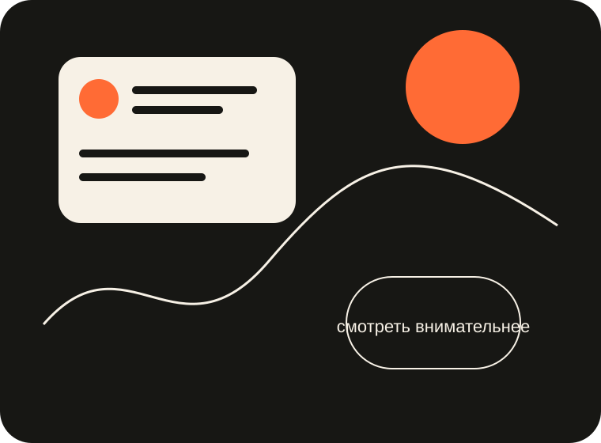

О проекте
Зачем нужны «Наблюдения».
Небольшой digital-журнал о том, что обычно остаётся между экраном, цифрой и пользовательским действием.

Идея
Один материал — один вопрос.
Без длинного теоретического вступления: ситуация, несколько наблюдений и вывод, который можно обсуждать или проверять.
Темы
Интерфейс + данные + поведение.
Эти три слоя редко существуют отдельно. Поэтому материалы специально смотрят на цифровую среду с разных сторон.
Учебная часть
Сайт сам становится объектом анализа.
У проекта есть разделы, статьи, переходы и пользовательские действия. Это позволяет изучать источники трафика, глубину просмотра, популярность страниц и события на небольшом реальном сайте.
Принцип
Не выдавать наблюдение за закон.
Материалы носят авторский и учебный характер. Здесь важнее сформулировать хороший вопрос, чем объявить одно универсальное правило для всех продуктов.